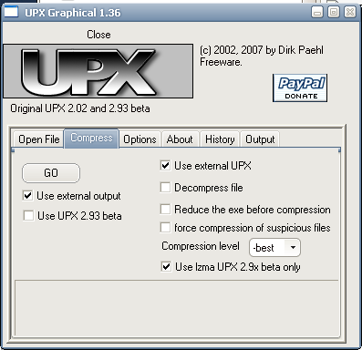
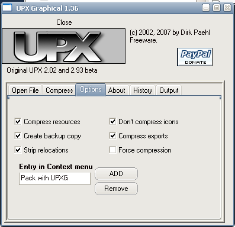

Fehler beim aufgradieren von Mozilla Thunderbird Version 1.5.0.12 auf Version
2.0.0.4 (deutsch)
Problem:
Nach der Installation der neuen Version 2 (deutsch) über die alte Version 1 kommt die Fehlermeldung:
XML-Verarbeitungsfehler:Undefinierte Entität..Adresse : chrome/messenger/content/messenger.xul.Zeile Nr.293,Spalte16:<treecoid....+fixed true...+cycler true....
Den gleichen Fehler habe ich zwar hier gefunden, aber keine Lösung.
Fehlersuche und -behebung:
Start von TB im Safe-Mode funktioniert.
- Suche nach dem angegebenen Text mit AgentRansack in den Verzeichnissen %appdata%\Thunderbird und im Thunderbird
Programmverzeichnis. Mehrere Dateien werden gefunden. Der Fehler liegt anscheinend in der Datei messenger.jar im
Programmunterverzeichnis \chrome.
- Löschen der Datei messenger.jar bewirkt, daß sich TB nicht mehr starten läßt.
- Vollständiges Löschen aller Dateien im TB Programmverzeichnis und neue Installation der US Version 2.0.0.4.
- TB startet, aber im untersten Bereich steht die Fehlermeldung <menuitem.
- Deinstallieren aller inkompatiblen Erweiterungen. Nach der Deinstallation von Buttons! ist die
Fehlermeldung am unteren Teil verschwunden. Installationd er neuen Version Buttons! 0.5.3.2, die nicht durch den automatischen
Update-Dienst bei der Neuinstallation installiert wurde.
- Installation der deutsche Oberfläche de.xpi und Wechsel auf Deutsch mit
Locale Switcher [de].
- Installation einer neuen Version von jsLib lite, die
auch nicht automatisch installiert wurde.
- Installation neuer Wörterbücher.
- Installation von MailTagger. Die neueste Version ist auch nicht automatisch installiert worden.
- Auto Copy 0.6.4 funktioniert in TB 2. Zur Installation muß MR Tech Local Install
installiert sein und bei der Installation von Auto Copy 0.6.4 der Kasten "Den Kompatibilitätstest ('maxVersion') deaktivieren" abgehakt werden.
- Installation der neuesten Version von Enigmail.
- Und zum Schluß die Kompression von thunderbird.exe mit UPX 3.00 auf unter 40% der Originalgröße. Als Oberfläche für UPX benutze ich UPX Graphical mit den Einstellungen wie hier gezeigt.
Die Datei upx.exe muß dafür im Programmverzeichnis von UPX Graphical vorliegen!


Home